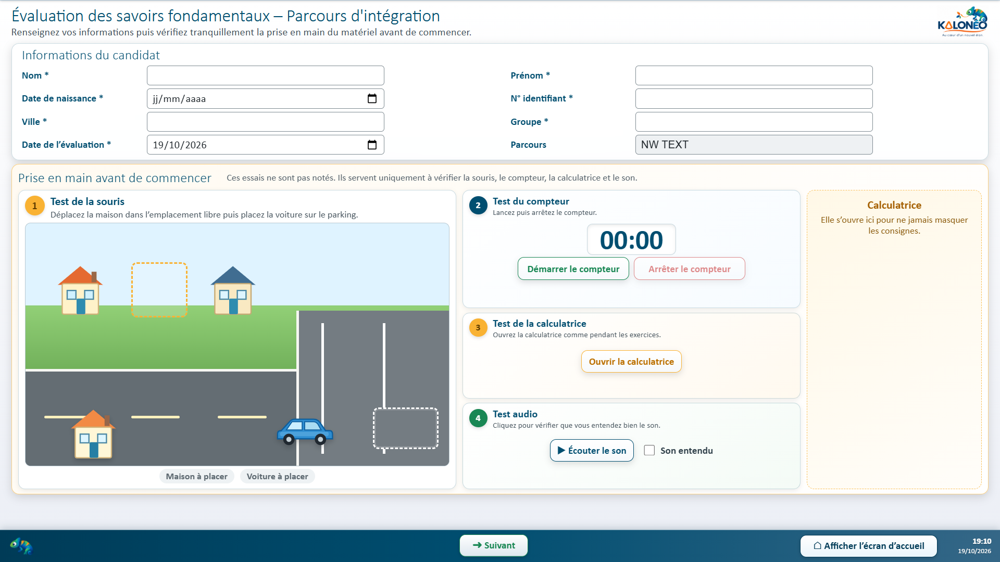
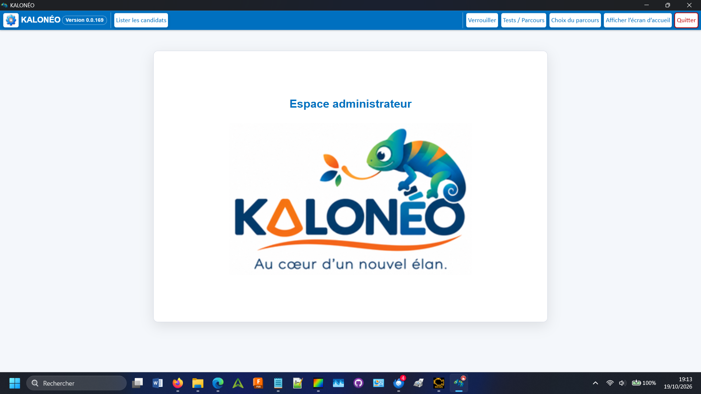
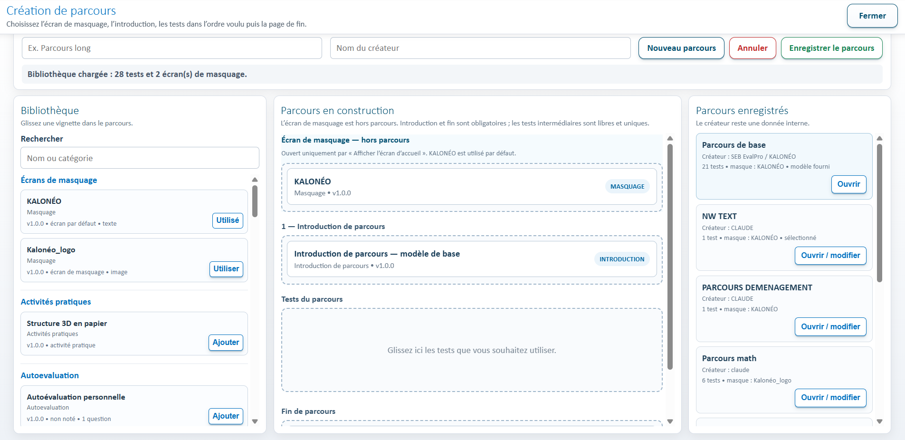
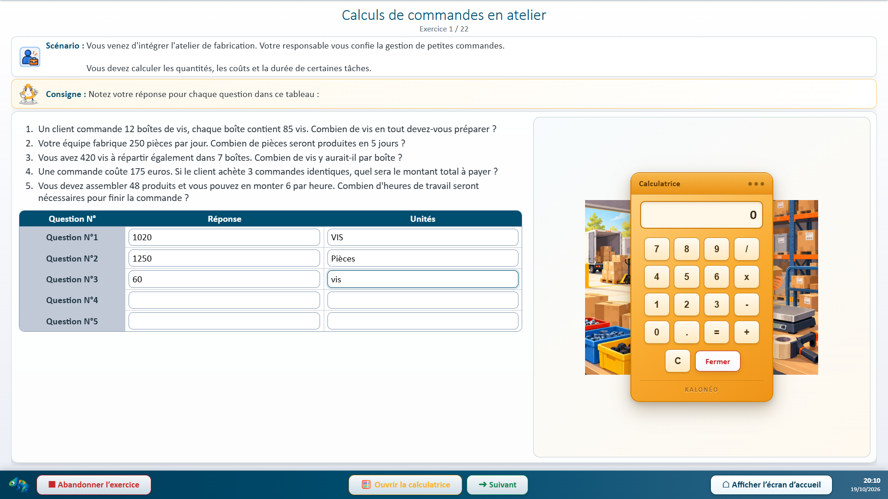
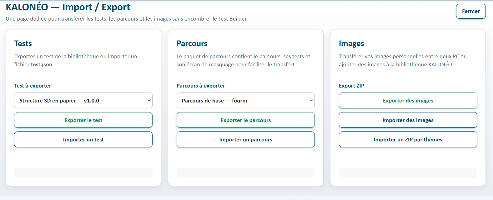
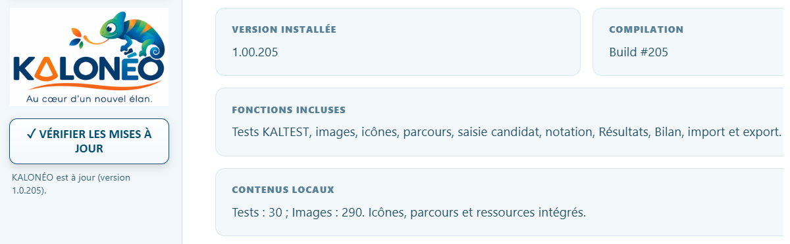
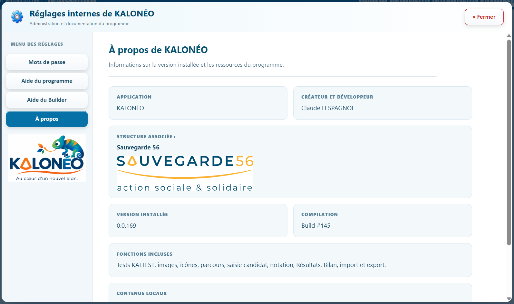
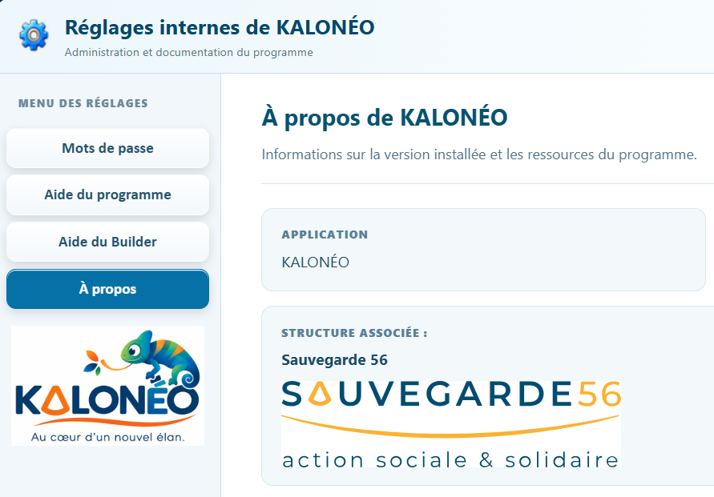

Guide illustré avec captures réelles — disponible hors connexion.
Ce guide fonctionne hors connexion. Les captures peuvent être agrandies et les fonctions du programme sont expliquées étape par étape. Une connexion Internet est nécessaire uniquement pour rechercher ou télécharger une mise à jour.
01 · Prise en main
À quoi sert KALONÉO ?
KALONÉO permet de préparer des exercices, composer des parcours, faire passer des évaluations à des candidats et consulter leurs résultats dans l'espace Administrateur.
Le logiciel fonctionne localement et hors connexion, sur un poste Windows équipé de l'application.

Capture A01 — Identification et prise en main avant le parcours. Cliquez pour agrandir.
02 · Accès
Passer en mode Administrateur
Retrouver la barre bleue des commandes : dans KALONÉO, cette barre est volontairement masquée tout en haut de l'écran pour laisser la place aux exercices. Pour l'afficher, déplacez le pointeur de la souris jusqu'au bord supérieur de la fenêtre. La barre réapparaît automatiquement : gardez la souris dessus pour accéder aux boutons. Lorsque vous éloignez le pointeur, elle se masque à nouveau après environ une seconde. Il n'est pas nécessaire de cliquer pour la faire apparaître.
Pour passer en mode Administrateur, faites apparaître cette barre puis cliquez sur « Administrateur » et saisissez le mot de passe prévu. La barre donne ensuite accès aux fonctions autorisées ; le bouton « Verrouiller » permet de revenir au mode protégé.
La roue dentée des réglages ne s'affiche qu'en mode Administrateur. Le menu latéral des Réglages donne accès aux mots de passe, à l'aide du programme, à l'aide du Builder et à la rubrique À propos. Les aides utilisent la zone de lecture à droite.
Reconnaître le bouton Réglages : c'est cette roue dentée, sur fond bleu très clair, située à gauche de la barre Administrateur. Cliquez dessus pour ouvrir les réglages et consulter les deux aides.

Capture A02 — Espace administrateur et commandes disponibles. Cliquez pour agrandir.
03 · Candidats
Retrouver un candidat
Ouvrez « Lister les candidats » pour accéder aux dossiers présents sur le poste. Vérifiez toujours l'identité du candidat avant de consulter un résultat ou d'éditer un bilan.
La création d'un dossier candidat et sa gestion suivent le parcours ; ne supprimez pas manuellement les données de travail. Pour supprimer une évaluation, utilisez les commandes prévues : elle est d'abord déplacée dans la Corbeille, avec ses résultats, replays et bilans. Vous pouvez la restaurer tant que la Corbeille n'a pas été vidée. Vider la Corbeille est une opération définitive, avec confirmation explicite.
Capture A01 — Saisie des informations d'un candidat. Cliquez pour agrandir.
04 · Parcours
Tests et parcours
La commande « Tests / Parcours » mène aux outils de préparation. « Choix du parcours » sert à sélectionner le parcours à proposer aux candidats.
Un parcours regroupe des tests et leur ordre de passage. Vérifiez sa composition avant utilisation.

Capture A06 — Création d'un parcours et bibliothèque des tests. Cliquez pour agrandir.
05 · Création
Créer ou modifier un test
Le Test Builder permet d'écrire le scénario, les consignes, les questions et les barèmes. Le bouton « Aperçu » ouvre le véritable rendu candidat dans Electron.
Pour l'explication détaillée des blocs, utilisez l'autre bouton « Aide du Builder » depuis les Réglages.

Capture A07 — Exercice candidat et calculatrice intégrée. Cliquez pour agrandir.
06 · Résultats
Consulter les résultats
Ouvrez le dossier du candidat puis la page « Résultats du test ». Les exercices sont regroupés par domaine ; la fiche affiche leur score, le pourcentage de réussite et, lorsque le test le permet, les réponses enregistrées. Dépliez « Consulter les réponses » pour comparer les réponses données à leur évaluation. Le score maximal dépend du barème : un test de cinq questions peut par exemple être noté sur quatre points.
Cette page présente les résultats enregistrés en lecture seule. Les niveaux institutionnels et la synthèse sont traités dans le bilan Administrateur.
Les durées, erreurs et autoévaluations ne sont affichées que lorsqu'elles sont enregistrées par le test correspondant.
07 · Bilan
Préparer le bilan
Depuis le dossier du candidat, ouvrez le Bilan institutionnel. Les réponses des tests liés à une ligne officielle peuvent renseigner automatiquement cette ligne et son pourcentage de réussite. Les niveaux NE, I, II et III et les commentaires restent modifiables par l'Administrateur ; vérifiez les éléments non évalués automatiquement.
Utilisez « Générer la synthèse » pour obtenir une proposition de texte, puis relisez-la et modifiez-la si nécessaire. Cliquez sur « Enregistrer les modifications » pour conserver le bilan et sur « Exporter Word » pour obtenir le document prévu. L'export Word sécurisé est distinct de la passation candidat.
08 · Transfert
Importer et exporter
La fenêtre « Import / Export » propose trois sections distinctes : Tests (exporter ou importer un test), Parcours (exporter ou importer un parcours et ses ressources) et Images (export ZIP, import d'images ou import d'un ZIP par thèmes). Vérifiez la sélection avant chaque transfert.
Les dossiers candidats ne se transfèrent pas par cette bibliothèque : utilisez leur fonction dédiée d'export et d'import chiffrés et protégés par mot de passe. Conservez le mot de passe de transfert, vérifiez le contenu sur le PC destinataire et gardez une sauvegarde avant un déplacement important.

Capture A05 — Fenêtre Import / Export : Tests, Parcours et Images. Cliquez pour agrandir.
09 · Réglages
Changer les mots de passe
Dans la barre Administrateur, ouvrez la roue dentée puis « Mots de passe ». Choisissez l'accès Administrateur ou Développeur, saisissez le mot de passe actuel, puis le nouveau deux fois.
Le changement est enregistré localement sur le PC et doit être répété sur les autres postes si nécessaire. Conservez le nouveau mot de passe en lieu sûr.
10 · Mises à jour
Mettre à jour KALONÉO
Dans l'espace Administrateur, ouvrez les Réglages puis cliquez sur « Vérifier les mises à jour ». Si une version plus récente est proposée, cliquez sur « Télécharger la mise à jour ». KALONÉO enregistre le Setup dans le dossier Téléchargements de Windows, contrôle le fichier avec son empreinte SHA256 puis affiche « Installer maintenant ».
Quand le téléchargement est terminé et vérifié, utilisez « Installer maintenant » pour fermer KALONÉO et lancer l'installateur. Suivez les indications affichées et vérifiez le nouveau numéro de version au redémarrage. Une connexion Internet est nécessaire pour la recherche et le téléchargement ; les évaluations continuent à fonctionner hors ligne.

Capture A08 — Réglages et mise à jour intégrée de KALONÉO. Cliquez pour agrandir.
11 · Ressources
Images et icônes
Les bibliothèques servent à réutiliser des illustrations dans les tests. Les ressources internes techniques ne doivent pas être confondues avec les images pédagogiques.
Les ressources d'un test exporté doivent rester utilisables après import sur un autre poste.
12 · Informations
À propos du programme
La rubrique « À propos » des Réglages indique le développeur, la version installée, le numéro de compilation et les ressources intégrées.
La rubrique contient également « Lire la licence d’utilisation » pour consulter les conditions d'utilisation du logiciel. Pour demander de l'aide, relevez la version exacte et le nom de l'écran concerné.

Capture A03 — Réglages, version, créateur et structure associée. Cliquez pour agrandir.

Capture A04 — Logo sous À propos et présentation de la structure associée. Cliquez pour agrandir.
13 · En cas de problème
Préserver votre travail
Avant de fermer une page de conception, enregistrez votre travail. Si le curseur quitte un champ sans raison ou si un aperçu semble incorrect, relevez l'étape précise et comparez avec l'aperçu Electron.
Ne modifiez pas les versions V1 validées pour contourner une anomalie de l'interface.
14 · Compatibilité
Systèmes Windows testés
Des essais de fonctionnement de KALONÉO ont été réalisés sous Windows 11 Professionnel, version 26H2, et sous Windows 10, sur des ordinateurs différents. Le PC sous Windows 10 avait auparavant été mis à niveau depuis Windows 8 : cela ne signifie pas que KALONÉO a été testé directement sous Windows 8.
Les versions Windows antérieures n'ont pas encore été validées. Ces observations confirment le fonctionnement sur les configurations essayées ; elles ne constituent pas une garantie de compatibilité avec tous les PC.